理解“互联网+”，看这一篇就够了！
2015-08-21
“任何企业都可以找最强的竞争对手打，但有一个对手你是打不过的，那就是趋势。”以下是周鸿祎在北京“移动互联网时代的产品创新”大会上的演讲。干货满满，为你呈现。
“+互联网” VS “互联网+”
今天很多传统行业，包括很多人创业，都是希望把传统行业跟互联网结合，都在谈“互联网+”。
“互联网+”到底是什么？我的理解有两种：一种叫“+互联网”，一种叫“互联网+”。
“+互联网”是把互联网当成术。比如说，你原来是卖大饼的，现在你不只在线下卖，也在网上卖了，或者是弄了一大波美少女，给人上门送大饼（所谓的O2O），这些都是利用互联网,是“传统企业+互联网”。
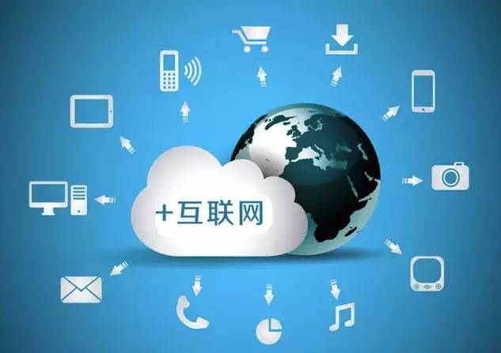很多传统制造业老板跟我谈工业4.0。从狭义上说，工业4.0是让工厂更加自动化，用各种智能化的设备，把工厂全部用互联网协议连在一起，很多东西共享到云端，加强跟客户的联系，本质来讲，这些都是“+互联网”——是做加法，不会产生爆炸级，指数级的变化。
也就是说，这些做法没有改变一个行业或产品的本质，只是利用互联网把它改得更有效。
先看一个例子
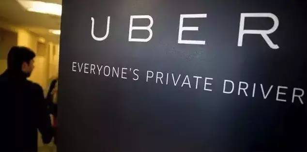uber的理念：让每个人都能拥有私人司机
Uber为什么能成为全球最大的“不租车的租车公司”，是因为他改变了连接关系。
过去很多人有车，不能接活，所以我们必须跟出租车司机相连接，出租车公司跟政府相连接，获得执照，然后再跟用户相连接，这很复杂。
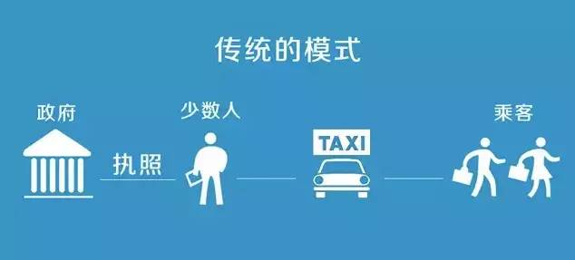uber从两方面颠覆了连接关系
1.颠覆了用户和出租车的连接
你不要小看这点，我在美国用uber的时候，一直以为它是靠便宜。后来发现，便宜只是一方面。
你们肯定体会过，站在路边，许多空出租车驶过，就是不接你的心情。遇到这种情况，我就特想拦路抢劫一辆车。
因为有了手机有了连接，Uber现在给了你一个体验：它能让你看着代表着来接你的车的小蓝点或者小绿点，小红点，快速的向你接近。这种感觉太美好了，这就是原来你没有过的体验。
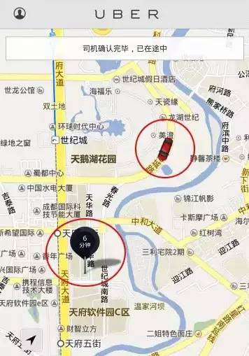2.当然更重要的是商业模式，它改变了所有开车司机的连接。
过去只有少数人跟出租车公司连接，uber让每个人都可以当“黑车司机”。你会发现，uber 什么都没有变，它既没有改造汽车，没有在汽车里加一块电池，也没有在汽车里加ipad，他改变的只是连接关系。
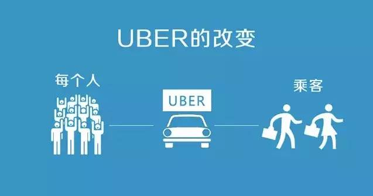所以说“互联网+”是道，是用互联网的哲学，互联网的思维去指导一个产品或传统行业如何做产品，改变它的产品体验，改变它看待用户的方式，改变它跟用户的连接方式，改变商业模式，从而让资源真正重新配置，产生化学反应甚至核反应效果。
连接：改变一切的力量”
过去很多传统大咖看不上互联网，把互联网看成一个垂直行业，认为是一群毛孩子忽悠国外VC（风险投资）的钱在国内乱烧。但是为什么互联网在快速改变很多行业？它不再是个垂直行业，它水平地对很多行业带来摧毁和重塑。这里面最本质的力量是什么呢？
行业里有一个老朋友，也是前辈，丁磊，为了在2000年互联网泡沫破碎的时候给自己打气，也给大家打气，弄了一个广告，那个广告当年我没看懂，过了十年我终于理解了，那个广告我觉得道出了互联网的真谛，叫“网聚人的力量”。
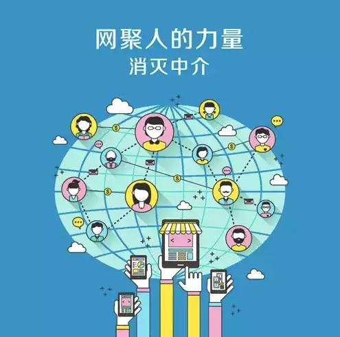网络之所以牛掰，就是因为它把很多东西连在了一起。一个网络的价值跟它的节点的数目不是成正比的变化，而是呈指数级的变化——当这个网络只有一个节点的时候，它就没有价值。 但是第一亿个节点，它获得的价值不只是它本身，还有前面一亿减一个节点拥有的价值，是价值的指数变化。
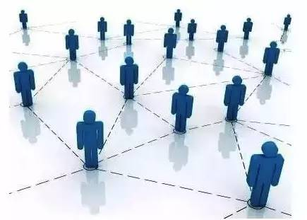无论是互联网还是未来的IOT（物联网internet of things），最核心的本质，背后的力量都是connection——连接。你要考虑你的产品如何能够加入到连接的网络里来，你的产品如何能真正把很多东西连在一起。这个东西可以是人，可以是企业，可以是everything，只有理解了连接，才会理解为什么很多行业会被颠覆。
举个栗子
微信为什么颠覆了运营商呢？而且为什么至少在一段时间里看起来是不可战胜的呢？因为微信改变了用户和运营商之间的连接关系，它解决了我们每个人的连接问题。
张小龙确实很牛掰，假设微信是我做的，我最多能想到，做一个大家都会用的“摇妹纸”的功能。但是他用公众号把大家都连接起来，这就是中国互联网一个非常大的创新。
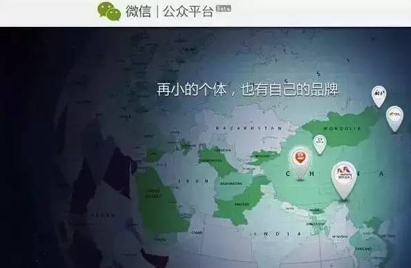在PC互联网时代为什么没有那么大的力量？PC互联网其实没有把人连起来，只是把电脑连起来了。电脑只是一个工具，它最多改变了信息传播的方式。
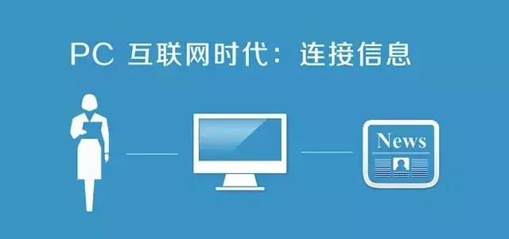手机互联网就不一样。手机是什么呢？ 手机是你身上的新器官，已经长在你手上了。它是人类发明的物件里跟人关系最紧密的，绝对是刚需。我们现在无论干什么——聚餐开会，夫妻在床上，都拿着手机看。
PC端，我们每天的在线时长，最多就8个小时，甚至5个小时，手机怎么地也有十几个小时吧。
今天我把你的什么东西没收了都可以，但手机没收三十分钟，有人就要跟我拼命。没办法，这已经成为了一种病。
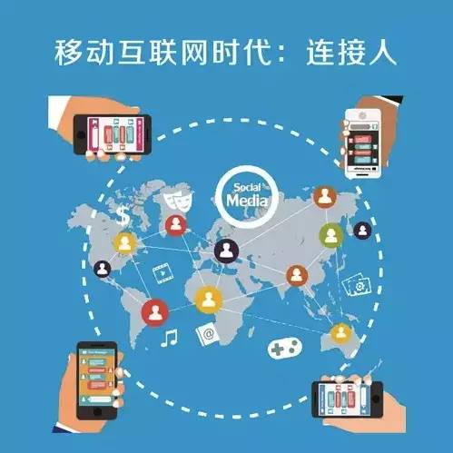而且，手机是移动的设备，它把每个人连起来以后，这个网更大了，不仅时间更长了，手机里还有传感器，摄像机，录音机……产生了更多的信息。所以微信为什么会比QQ牛掰，就是因为它真正把人连在了一起。
“未来的趋势是什么？”
创业和做产品有两种思路
1、站在过去看现在
2、站在现在看未来。
我们太多人喜欢总结，喜欢看过去，我也犯过这样的错误，什么事成功了我们就可以借鉴，这就是站在过去看现在。这样的好处是什么呢？不用争论，因为有数据可以看，有数据案例可以分析。但问题是，它已经过去了，已经out了。
你要创业，要创新时，就不能这样做，一定要做未来的事情。
未来的事情也有两种
1、要么是别人没做过的事情
2、要么是把别人做过的事情换一种别人想不到的方式去干。
你只有做一件今天大家可能都不看好，但明天后天有可能做起来的事情，你才可能获得巨大的成功。
未来的趋势
1、一个趋势叫IOE（Internet of everything）.
我觉得这更多是对服务业来讲的，即用互联网对“服务员”进行改造，打车，订餐，都是的。国内喜欢用O2O，叫online to offline。
2、另一个趋势叫IOT（Internet of things）.
把很多物理器件都变成智能设备，然后跟云端连接在一起。
这就意味着，今天你看到的所有东西，都可以被智能化、无线化、移动化和云端化。我把它叫做“万物互联”。

有人把这个叫做物联网，我特不喜欢，这个词前几年被用烂了，被很多人庸俗化成一个传感器网络。
在公共系统里面，传感器网络根本不是什么新鲜词。如果仅仅是一个传感器，没有太大的价值。
重要的是每个设备都是智能的，通过采集数据，做出智能的判断，再把数据返回到云端，云端才能真正汇总成大数据，大数据再产生一些结果，反馈给各个智能设备。
“重新发明轮子的时机到了”
前两天，我见一个行业大佬，我说，智能汽车就是四个轮子的iPhone，他特别激动说，他早就这么认为，但大家不认同。
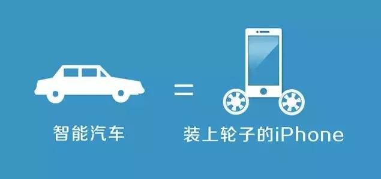在IOT的世界里面，所有的东西都是拿在手里的。未来手表是不是手机？眼镜是不是手机？谁说五年以后手机，一定还是现在这个样子的呢？想想所谓的车联网，当你坐到车里，真的需要再把手机打开吗？可能这个车本身就变成了智能的系统。
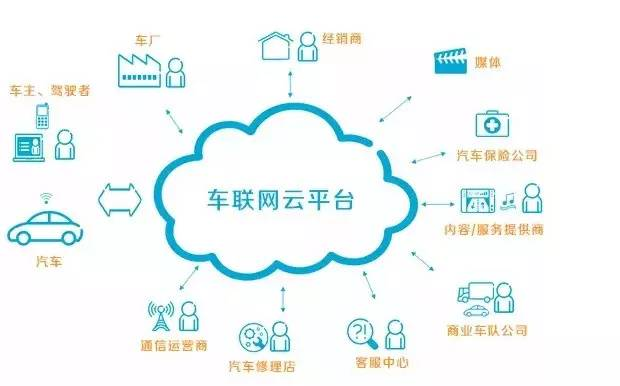你回到家里，把手机一撂，家里可能到处都是智能设备，包括你身上穿戴的各种东西（我一直在想能不能做一个可充电皮带，皮带里装满电池）。
所以，重新发明轮子的时机到了
我们过去经常讲，不要重新发明轮子，就是说，在做产品的时候，要尽量利用已有的成果，不要什么都从零做起。
但是从另外一个方面讲，你也可以重新发明轮子。因为轮子虽然不能从圆的变成方的，但可以加入智能化的东西，比如气压的传感，轮胎磨损的传感，也可以有一个智能的蓝牙或者通讯的模块，它可以和你的汽车相连，甚至可以和你的轮胎厂商相连。
比如说，前段时间，GE在他们所有的航空发动机里装上了智能设备，记录发动机的运转数据，同时把数据汇总到GE总部，通过大数据告诉航空公司，哪个发动机跟其它发动数据曲线不太一样，有问题。
这不仅意味着很多设备可以智能化，最重要的是什么呢？
1、很多硬件产品的用户体验将被重新改变，它变成了一个互联网产品，而不是一个傻硬件。
2、商业模式会被改变，也就是一个以卖轮胎、发动机的商业模式会转换成提供服务的模式。
换句话说，我认为以后绝大多数产品，特别是3C产品，除了苹果之外，卖硬件赚钱的机会都会越来越没有了。以后很多设备都只会变成连接，只有将用户、客户和厂商重新建立联系，才能用连接去重塑商业模式。
“用户思维，而不是客户思维”
我跟很多传统企业老板讲，转型互联网其实特别简单，就一层窗户纸，捅破了就好了。但知易行难。
在我看来，最重要的是要转换一个概念，就是要有用户思维，而不是客户思维。
举个栗子
滴滴和快的最早做的是打车生意。打车过程中，出租车公司会向滴滴付钱吗？出租司机会向它付钱吗？打车的人会向它付钱吗？没有一个人是它的客户。
但是它解决了两个问题：打车是不是刚需？打不到车是不是痛点？它解决了一部分用户，或80%的用户高频的刚需和痛点，跟用户建立了连接。
以前用户和出租车司机有连接吗？没有。但是现在跟打车软件建立连接后，它有了这么多用户，下一步就往专车走了。
再下一步，这些大大小小的出租公司，就要跟打车软件谈了：哥，你分业务的时候，能不能把一些业务发给我？所以，天底下所有的出租公司，或者有出租车的人，最后都会成为它的客户。这个前提，就是它连接了很多用户。
“互联网公司：产品简单，商业模式复杂”
传统行业，产品、业务很复杂，商业模式特别简单。无论多么眼花缭乱的业态和组织结构，最后都是要把东西卖给张三李四，谁掏钱谁就是他的客户，是他的衣食父母，所以他们就编出了一套说辞来麻痹自己，叫客户永远都是对的，客户是上帝。
如果他们心中只有客户的概念，就转型不了。为什么？很多人跟客户之间，不说一夜情关系，也最多是炮友关系，一年也见不到两次。
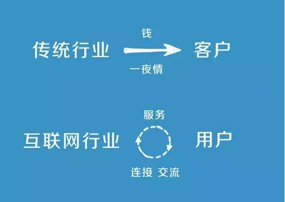什么是用户？有几个特征
1、不见得向你掏钱
2、要经常性用你服务或产品
3、一定要直接跟你连接
4、一定要定期有交流
很多互联网公司产品简单，商业模式复杂，特别是to C的产品，你要用一句话就让消费者听明白，为啥用你的产品，所以要简单，比如说微信，摇一摇摇妹子。
但是要找到赚钱的办法，就要不断从A走到B走到C走到D，不断推演，这是互联网行业跟很多行业的差别。
“巨头被干掉，不是死了，是被边缘化了”
中国最牛的行业是什么？是运营商，因为他拥有的又是客户又是用户——你每个月交话费，买套餐，是客户；你每天在打电话，发短信，上网离不开他的服务，是用户。
运营商断服务一分钟你都受不了。但为什么说，微信还是干掉了运营商？
干掉的意思，不是死了，是被边缘化。不是说有了微信的免费信息服务，导致运营商的短信收入下降了，对运营商来说，那几百亿的收入只要用户还在就可以做。
最致命的是，每天你手机里用的是大量的第三方公司的产品，你和运营商之间被以微信为主的各种互联网服务隔离了，你跟运营商的距离越来越远。
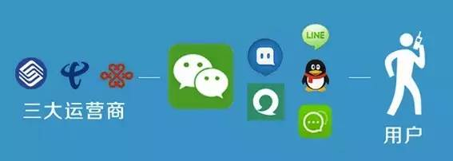所以以后，大家跟运营商之间就没用户关系了，只剩下客户关系。你连营业厅都不用去，在网上充值就行了。如果以后免费wifi无处不在，那连SIM卡都不要了。
前几年携号转网，运营商慌得要死，因为他们觉得号码是资源。我说，大哥，别逗了，你看大家在陌陌上聊了半天，最后互留了啥？——微信号。
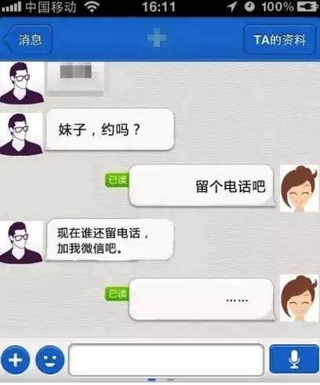透过现象看本质：将来离用户最近的，使用时间最长，粘度最高的厂商是最有价值的，以此类推。
你或许会说，运营商总是修路的吧，没有我修的路，哪来你跑的车，我们要是把路断了，你们就不行了。
道理很简单，就像我那本书一样，今天你买那本书，你关心的是谁写的，内容是什么，你不会关心在哪印刷，不会关心纸从哪里来。造纸厂的大哥可以骄傲地和我说，老周，你得瑟什么？没有我们的印刷，你这本书出不来。我承认，他说的是对的，但他们在价值链的末端，是可替换的，他们赚的利润自然也是最低的。
“互联网公司：产品简单，商业模式复杂”
运营商曾经提过一个问题，就是微信收费吗？这就是传统思路，提供了某种服务就要收费，你要收费就要把他变成客户。马化腾用得着收费，把大家都变成客户吗？微信每年怎么也得投入几十个亿吧，然后给大家提供免费的通讯服务，让你们每天都花五个小时上网，让你们离不开，像我想不用都不能，因为你们都用啊。
有了用户之后，互联网的规律就来了，两个词——“胡打胡有理”和“插着扁担都开花”。他在上面做什么不好？
有一段时间，微信出广告了，有些人还特别期待，世界真是变了——很多人收到可乐的广告，很沮丧；有人收到宝马的广告，奔走相告，我终于收到了宝马的广告了。所以未来腾讯在微信还能做更多的事情，所有你想得到，想不到的，都可以做，这就是用户的力量。
这不是空话，如果概括互联网的特性只能用四个字，那就是“用户至上”。
很多人一上来就跟我说，我在互联网里怎么赚钱。我不是不爱钱，我跟你们一样爱钱，因为没有钱是万万不能的。但是在互联网上刚开始就想怎么赚钱，就想着弄客户，你可能就没有用户，那其它互联网的东西都免谈。
所以，你要想想，你到底拥有的是“客户关系”还是“用户关系”。